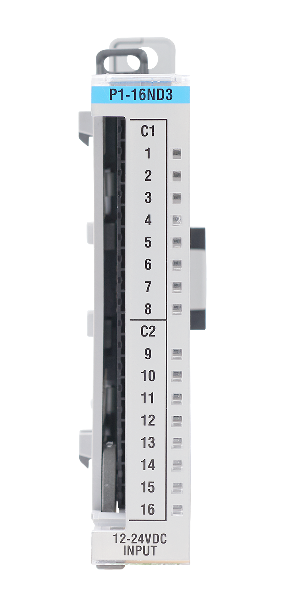

This function returns the state of a single channel.
bool point = P1.readDiscrete(1,2); // Read state of slot 1 channel 2This function returns the state of all 16 channels. It would return 0x7FFF if channels 1-15 are on.
uint16_t allPoints = P1.readDiscrete(1); // Read state of all channels for slot 1Compatible Functions
Module Configuration and Status Tables
This module does not provide any status data and does not require configuration.

Channels: 16
Discrete Input Type: Sinking or Sourcing
Rated Input Voltage: 12-24 VDC
Example: DiscreteInput
Additional Resources:
Data Sheet
P1-16ND3 on Automation Direct